PWM 駆動油圧サーボ機構のモデル作成
このデモでは、Simulink® と Stateflow® を使用して、パルス幅変調 (PWM) ソレノイドによって制御される油圧サーボ機構のモデルを作成します。このタイプのモーション コントロール システムは、工業、製造、自動車、航空宇宙などのアプリケーションで使用されています。
このデモでは、非線形の微分方程式を使用して、システムの磁気、油圧、および機械コンポーネントのモデルを作成します。コントローラーは離散時間の微分方程式を使用して表現されます。Stateflow 内の動作モデルには、PWM 波形の生成とソレノイド電流の調整を行う電子回路が実装されます。図 1 は、この機構を示しています。
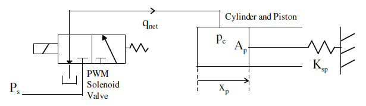
図 1: ソレノイド バルブと油圧アクチュエータの概略ブロック線図
- メモ: これは基本的な水力学のデモです。Simscape™ と SimHydraulics® を使用して、水力学のモデルをより簡単に作成できます。SimHydraulics は、Simulink の拡張機能として、水力および制御システムのモデル作成およびシミュレーションのツールを備えています。これを使用すると、接続された油圧コンポーネントと機械コンポーネントを物理ネットワークとして含むマルチドメイン システムを記述できます。
目次
非線形の微分方程式を使用したモデル作成
サーボ機構のバルブのモデルは次の 4 つの部分に分かれています。
- 磁気回路
- ソレノイド電機子の運動
- 油圧システム
- ピストン運動
磁気回路
まず、磁気回路について説明します。磁束の導関数は、ファラデーの法則によって次のようになります。
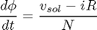
ここで、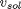 はソレノイド電圧、 は電流、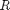 は巻き上げ抵抗、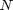 は巻き上げ回数です。この方程式は、周辺の磁束と漏れ磁束が無視できるレベルであると想定しています。
また、磁束 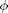 と磁束密度 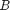 を関連付けるエア ギャップ断面積 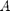 は鋼鉄の経路に均一に適用されると想定しています。
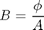
磁束密度は、空中および鋼鉄の磁場の強さに関連しています。空中での磁場の強さは次の式で計算されます。
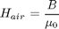
ここで、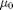 は空気の透磁率です。鋼鉄内では、非線形の関数によって磁場の強さ 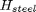 が磁束密度 に関連付けられています。
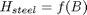
このデモではヒステリシスのモデルが作成されていないので注意してください。空中の磁場と鋼鉄内の磁場の組み合わせによって、次のような動磁力が得られます。
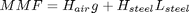
ここで、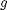 はエア ギャップの長さ、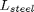 は鋼鉄の磁気回路の長さです。
最後にもう 1 つ、磁気回路内のループを閉じて電流 を得るために次の式が必要です。
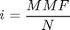
機械コンポーネントでは、ソレノイドによって得られる力は次のように計算されます。
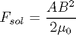
Simulink で実装すると、磁気回路の式は次のようになります。
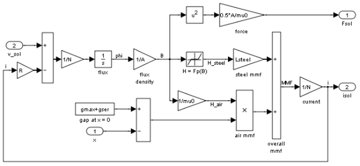図 2: ソレノイド磁気回路サブシステム
ソレノイド電機子の運動
ソレノイドの可動部分である電機子の運動は、次のように磁気、油圧、および機械的な力の組み合わせによって生成されます。
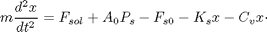
ここで、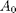 は供給オリフィス面積、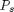 は油圧回路の供給圧力、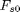 はスプリング プリロード、 はスプリング戻り速度、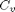 は減衰率です。
はスプリング戻り速度、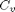 は減衰率です。
Simulink では、この式は図 3 のように Second-Order Integrator ブロックを使用して実装されます。
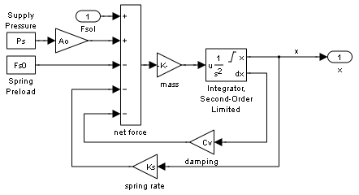図 3: 電機子の運動サブシステム
油圧回路
油圧回路内の流れは、ソレノイド電機子の動きによって制御されます。このシステムの概略図は次のとおりです。
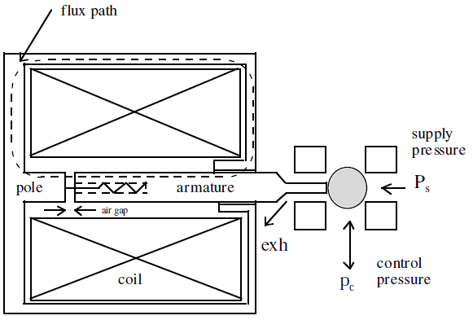
図 4: ソレノイドの概略図
この図は、磁気回路に電流が流れていないときに、内部のスプリングが電機子とボールを押して圧力 の供給を遮断することを示しています。供給圧力 が遮断されると、制御圧力 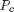 は排出に向けられます。ソレノイドに電流が流れると、電機子と電極が接触し、供給圧力 がボールを押して供給ポートを開き、排出ポートを遮断します。
供給システムからピストンへのオイル流量  は、供給流量と排出流量の組み合わせになります。
は、供給流量と排出流量の組み合わせになります。
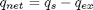
供給流量は次のように計算されます。
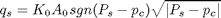
ここで、 は制御圧力、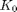 は流量係数です。排出流量は次のように計算されます。
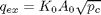
Simulink では、供給と排出の方程式は If Action サブシステムによって実行されます。これらのサブシステムは電機子の位置に基づいてアクティブになります。
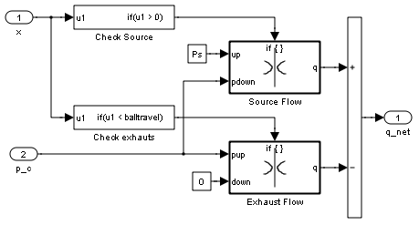図 5: バルブ流量サブシステム

図 6: オリフィス流量サブシステム
油圧回路を完成させるには、制御圧力を計算しなければなりません。この圧力は、回路内の正味オイル流量 とピストン位置 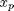 の関数になります。
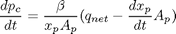
ここで、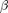 はオイルの体積弾性率、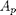 はシリンダーの断面積です。
Simulink では、これは次のように実装されます。
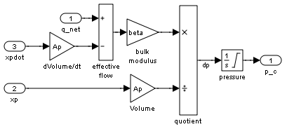図 7: シリンダー加圧システム
ピストン運動
ピストン運動の方程式は次のようになります。
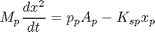
ここで、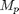 は正味アクチュエーター重量、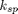 はスプリング戻り速度です。
Simulink では、この式は次のように Second-Order Integrator ブロックを使用して実装されます。
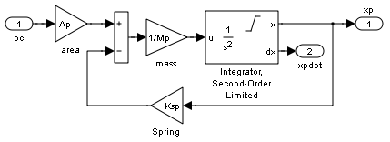図 8: ピストン運動サブシステム
離散時間の微分方程式を使用したコントローラー実装
このシステムの目的は、負荷 を時変設定値 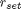 に追従するように配置することです。電子コントローラーはコマンドと設定値を比較して、PWM 制御信号を 50 Hz のレートで生成します。ここでは離散時間 PI 制御則を採用します。
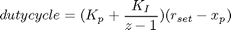
制御信号は 50 Hz のパルス列に適用され、パワー エレクトロニクスがパルス信号をソレノイド電流に変換します。
Stateflow を使用した PWM 生成回路の動作モデルの実装
この機能を実行するためにデジタルとアナログの集積回路を使用できるので、ここでは詳細な物理モデルではなく動作モデルを使用します。動作を記述するには、コマンドに対する回路の反応とその負荷の応答という観点で記述するのが最も良い方法です。図 9 は制御回路の通常サイクルでの電圧と電流を示しています。
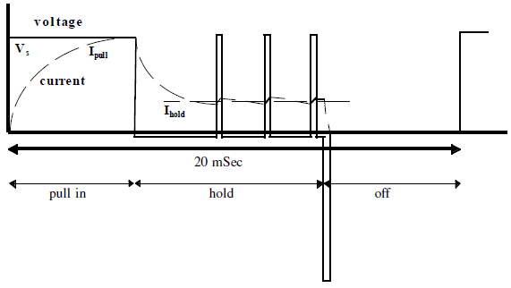
図 9: 1 パルス内での PWM 信号の電圧および電流の動作
各サイクルの開始時に、PWM パルスがオンになって、電機子を電極に押し付け、加圧バルブを開きます。その時点でドライバー回路は、最も速い初期電流の立ち上げを達成するために、最大電圧を適用します。電流が上昇して、磁力と油圧力がスプリングの抵抗に打ち勝って電機子を動かすレベルに達するまで、ソレノイドはこの状態を維持します。
電機子が引き込まれると、エア ギャップが非常に小さくなり、電機子を引き込んだままにするための電流は少なくて済みます。このドライバーは、サイクルがオンになっている残りの期間にわたって、電流を低レベルに調整します。
各パルスの終了時には、電機子が解放され、ボールが元の位置に戻って排出口が開きます。これは、磁場が急速に消滅するようにソレノイド回路を開くことによって行われます。その後は、次のサイクルが開始するまでのオフ期間、電流はゼロのままです。
このように、PWM サイクルのオン期間は電機子を引き付けて維持する期間です。オフ期間は、電圧と電流の急激な低下で始まり、ゼロにとどまる期間です。
これは Stateflow 内で次のように実装できます。
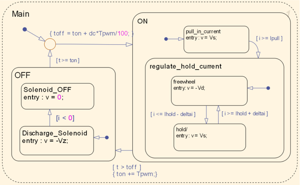図 10: Stateflow での PWM ドライバー回路の実装